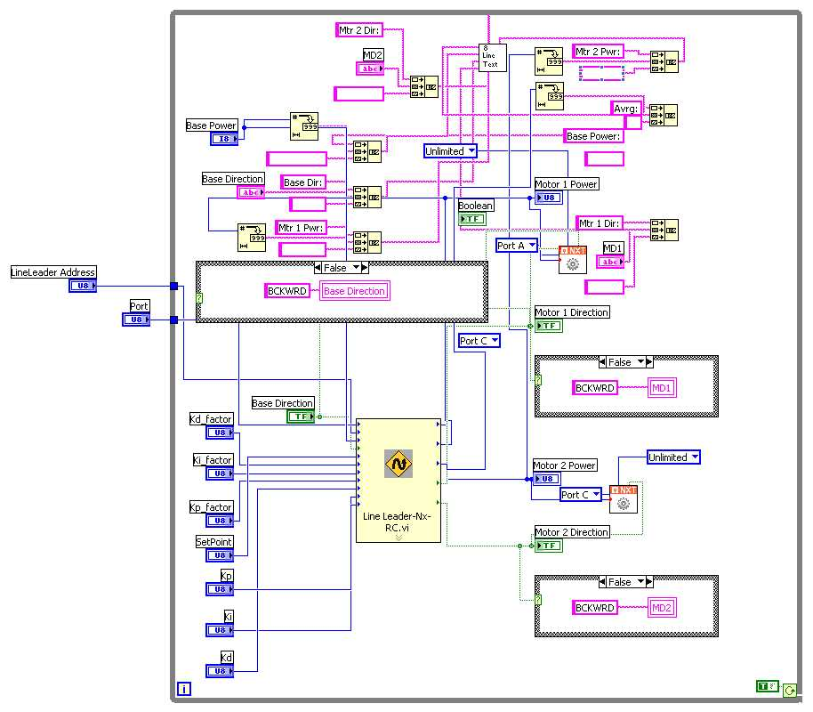

Inputs
Operation
Config PID Control - Configure Kp, Ki, Kd values for your robot design.
Wakeup - The sensor can be put to sleep (or goes to sleep after 1 minute of inactivity). The sensor wakes up on any command, however, use this command if you just want to wake it up, without any other operation.
Sleep - The sensor can be put to sleep using this command.
Take a Snapshot - keep on the line and ask sensor to 'remember' the line's width, and position. It also makes a note if the line is light or dark.
Invert Line - Specifically ask sensor to track a white line on dark background.
Reset Inversion - Reset previous inversion to default mode (dark line on light background)
Calibrate White - Calibrate the White color of sensor. When issuing this command, hold your sensor such that the sensor-window is fully over a white surface.
Calibrate Black - Calibrate the Black color of sensor. When issuing this command, hold your sensor such that the sensor-window is fully over a black surface.
Setpoint - the position of line to maintain.
Kp - the numerator value for the Kp
Kp_factor - the divisor factor for the Kp
Ki - the numerator value for the Ki
Ki_factor - the divisor factor for the Ki
Kd - the numerator value for the Kd
Kd_factor - the divisor factor for the Kd
Outputs
Motor 1 Power - For simple operation wire this to your left motor's power plug.
Motor 2 Direction - For simple operation wire this to your right motor's direction plug.
Motor 2 Power - For simple operation wire this to your right motor's power plug.
Sensor Average- The average of all 8 sensors values.
Sample Program
Sample located at
C:\Documents and Settings\User
Name\My Documents\LabVIEW Data\mindsesnors.com
LVHS\mindsensors.com Sample
Programs\NXTLineLeader-SP\NXTLineLeader-Remote